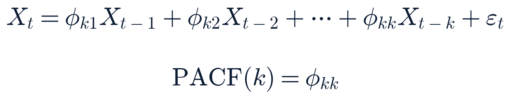

Indices / futures / commodities / FX (Yahoo Finance, close-series method)
EOD official (2026-08-05 close)
<30 min
Technical levels (Twelve Data time series: SPY, QQQ, IWM, DIA, TLT, SPCX)
EOD official (2026-08-05 close)
<20 min
Treasury par yield curve
EOD official (2026-08-04)
1 session (Aug 5 curve not yet published)
FRED (CPI, PAYEMS, rates, credit-spread series)
EOD official
varies by series (1–5 days)
Cboe VIX complex
EOD official (2026-08-05 close)
<20 min
Frankfurter FX (ECB reference)
EOD official (2026-08-05 fix)
same-day
CoinGecko crypto
Live
<5 min
FINRA daily short volume
EOD official (2026-08-04 session)
1 session (T+1 publication lag)
Whole-market breadth (Massive grouped daily)
EOD official (2026-08-04 session, captured this morning)
1 session — today’s (Aug 5) breadth not published until tomorrow
SEC EDGAR (market-wide + 90 per-company 8-K feeds)
Live
<2 hr
Section 2Top Stories Since Morning
NewConfirmed — multiple sources
Google's AI leadership reshuffle: DeepMind's Hassabis steps down as CEO, chief scientist Jeff Dean departs after 27 years; Alphabet falls about 4%
Event/published roughly 09:00–12:00 ET Aug 5 · Last checked 16:00 ET
What happened
Alphabet announced a sweeping reshuffle of its AI organization. Demis Hassabis is stepping down from day-to-day CEO duties at Google DeepMind, moving to Chairman of DeepMind plus a newly created role, Chief Scientist of Alphabet; Koray Kavukcuoglu (previously DeepMind CTO and Google's Chief AI Architect) steps up to run DeepMind day-to-day as Senior Vice President. Separately, Jeff Dean — Google's chief scientist and a 27-year veteran — is leaving to co-found Discovery Loop, an independent public-benefit corporation aimed at automating scientific and engineering research, alongside Google Senior Fellow Sanjay Ghemawat, former DeepMind VP Oriol Vinyals, and Google Brain co-founder Quoc Le. Google is a founding investor and cloud partner in the new venture; Radical Ventures and Khosla Ventures are co-leading its seed round. Hassabis said he wants "the time and space to focus on the big picture" and continues to lead Isomorphic Labs, his drug-discovery spinout.
Why it matters
Two of the most senior technical leaders in Google's AI effort are changing roles or leaving on the same day, against the backdrop of a company that just raised its 2026 capex guidance to $195–205B and posted its first-ever negative quarterly free cash flow (roughly $5.9B negative) funding that AI buildout — a costly, high-stakes bet now facing a leadership transition at the same time competitors (OpenAI, Anthropic) are moving fast.
What is confirmed
The role changes themselves and Hassabis's continued DeepMind chairmanship plus new Alphabet chief-scientist title, corroborated across CNBC, Axios, Bloomberg, The Information, and 9to5Google; Dean's departure and the Discovery Loop venture's backers and mission, also multiply corroborated.
What remains uncertain
Whether this is a contained, planned transition (as the company's own framing suggests) or the leading edge of a broader senior-AI-talent exodus; this report found no evidence of additional imminent departures beyond Dean's co-founders as of this cutoff.
Context
The reshuffle lands the same week this report has already been tracking a separate first-party AI-safety disclosure from Anthropic and a broader industry "pacing letter" signed by 1,100+ AI-company employees — both signs of a sector under unusual internal and competitive strain.
Impact
Companies/markets: GOOGL fell as much as ~5.4% intraday on the Dean-departure headline before settling to a −4.03% close (this run's own data); read-through to the broader "AI capex" trade is a channel to watch, though no other mega-cap AI name moved on this specific news today.
What happens next
Watch for Alphabet's own blog/investor communication elaborating on the transition, any further leadership changes, and whether GOOGL's move extends or stabilizes tomorrow.
Related assets (exposure ≠ direction)
GOOGL, MSFT, META, NVDA
Sources: CNBC, Axios, Bloomberg, The Information, 9to5Google, the-decoder, TradingKey, MLQ News (Q2 capex/FCF context) — all Aug 4-5.
Expanded analysis (collapsed by default)
The timing is notable: this is Alphabet's first AI-leadership shake-up since Q2 earnings revealed the company's first negative free-cash-flow quarter as a public company (operating cash flow $39.1B against $44.9B of capex, for roughly −$5.9B free cash flow), with the CFO separately cautioning that 2027 spending would "significantly increase" further and contractual commitments now exceeding $800B. A change in the technical leadership structure at exactly the moment the company is making its largest-ever capital bet is the kind of coincidence markets tend to read skeptically, even absent any stated connection between the two; this report does not assert a causal link between the capex disclosure and today's personnel changes, only that they are contemporaneous and that investors' reaction (GOOGL's sharpest single-day decline among mega-caps today) suggests the market is treating them as related.
SpaceX closes at a fresh post-IPO low, down 13.6%, two days before its ~$116B lockup expiration; AMD extends its post-earnings slide
Cash session close 16:00 ET Aug 5 · Last checked 16:05 ET
What happened
SpaceX (SPCX) fell 13.61% to close at $108.27 (this run's own Yahoo Finance close-series data), below its prior post-IPO low of $108.37 set earlier this week — a fresh all-time low for the stock since its June 12 IPO. The decline extends Tuesday night's post-earnings premarket selloff into a full second session of losses, now totaling roughly 24% from Tuesday's pre-earnings close of $125.33. AMD fell a further 7.04% to $482.05, extending its own post-earnings after-hours decline from Tuesday night into the regular session; AMD's Q2 revenue ($11.54B, +50% YoY) and EPS ($1.66) both beat consensus, but press coverage (TradingKey, Motley Fool, TipRanks) attributes the reaction to capex/margin questions rather than the quarter itself, alongside a possible sector-rotation contributor: Elon Musk's social-media announcement that SpaceX would commit exclusively to Nvidia's Blackwell AI infrastructure, which coincided with NVDA gaining premarket even as AMD, Intel, and Micron-adjacent names sold off — a divergence this report notes as a likely contributor, not a confirmed sole cause.
Why it matters
This confirms two open forecasts well ahead of their Friday grading: forecast 2026-08-02-sun-4 (SPCX moves >8% following its first earnings) and forecast 2026-08-04-am-1 (SPCX closes today's session more than ±10% from Tuesday's pre-earnings close) both resolve correct, with today's move alone exceeding both thresholds. The stock now heads into tomorrow's (Aug 6) roughly $116B share-lockup expiration — expected to roughly triple its tradeable float — already at a fresh low, a mechanical supply overhang layered on top of the capex-skepticism reaction.
What is confirmed
SPCX's and AMD's closing prices and percentage moves, this run's own direct data. Bank of America and Morgan Stanley both reiterated bullish SPCX ratings (Buy/$235 PT and Overweight/$300 PT respectively) despite the drop, per CNBC.
What remains uncertain
Whether tomorrow's lockup expiration produces further mechanical selling pressure or whether the stock has already priced in the anticipated supply increase; the precise driver split between capex framing, lockup positioning, and general space-sector softness (see below) has not been independently disentangled by this report.
Context
SPCX carried the highest short-volume ratio in the watchlist heading into this week (71.6% of Tuesday Aug 4's volume was short volume, per FINRA — short volume is not short interest, and this report notes that distinction explicitly). The broader space-sector watchlist was mixed-to-weak today: York Space Systems (YSS) fell an even steeper 13.91% to a fresh post-IPO low of its own, with no specific catalyst identified in this run's research; Viasat (VSAT) fell 5.95% on its own post-earnings revenue miss; AST SpaceMobile (ASTS) −2.74%, Spire (SPIR) −4.15%, Planet Labs (PL) −2.08%, Firefly (FLY) −2.10%, and Iridium (IRDM) −2.50% were all lower, while Rocket Lab (RKLB) +0.46%, Redwire (RDW, reporting after tonight's close) +0.94%, Karman (KRMN) +2.17%, and Voyager Technologies (VOYG) +3.79% bucked the group's weakness.
Impact
Markets/companies: SPCX, AMD, and the broader space-sector watchlist directly; a read-through risk to the AI-infrastructure trade broadly, though today's mixed AI-infra performance (see Winners & Losers) argues against a clean sector-wide spillover so far.
What happens next
Tomorrow's lockup expiration is the next scheduled catalyst; watch SPCX's opening print and volume for signs of the anticipated float increase being absorbed or not.
Related assets (exposure ≠ direction)
SPCX, AMD, YSS, VSAT, ASTS, RKLB, RDW, NVDA
Sources: this run's own Yahoo Finance close-series fetch (primary) · FINRA daily short volume (primary) · CNBC, Forbes, 24/7 Wall St., Invezz, TradingKey, Motley Fool, TipRanks (secondary).
Expanded analysis (collapsed by default)
YSS's move is the most puzzling single data point of the day: a 13.91% decline with no earnings, no company-specific news, and no clear sector-wide catalyst strong enough to explain a move nearly as large as SPCX's own earnings-driven slide, in a stock whose own Q2 report is not due until Aug 13. This report declines to assert a cause and flags it explicitly as Unexplained pending further information — possibly a thin-float mechanical move (YSS's market cap is roughly $2B) amplified by space-sector sympathy selling, but that is analytic speculation, not a sourced finding.
NewConfirmed — primary + multiple
Eli Lilly beats and raises full-year guidance on Mounjaro/Zepbound volume growth; shares gain nearly 5%
Filed/published before market open Aug 5 · Last checked 16:00 ET
What happened
Eli Lilly's Q2 2026 report (SEC EDGAR 8-K, filed 07:05 ET, and its own investor-relations release) showed GAAP EPS of $7.94 (versus $6.29 a year ago) on revenue of $23.0B, up 48% year-over-year, driven by 60% volume growth in its GLP-1 franchise (Mounjaro, Zepbound) partly offset by 13% lower realized prices. Non-GAAP EPS of $8.38 beat the roughly $6.01 consensus cited in secondary coverage. Lilly raised full-year 2026 revenue guidance to $85–87B (from $82–85B) and, netting a $3.03 per-share acquired-IPR&D charge against a $2.78 underlying raise, set updated non-GAAP EPS guidance of $35.50–36.50. Shares closed +4.76% at $1,168.77 (this run's own data), with an intraday high of $1,216.94; one secondary source described the stock as having "briefly joined the $1 trillion market-cap club" intraday, a claim this report has not independently verified against a market-cap calculation.
Why it matters
The beat-and-raise lands exactly one week after competitor Novo Nordisk's failed ZEUS cardiovascular trial triggered three consecutive sell-side downgrades (HSBC, Wall Street Zen, and UBS as of today) — a direct, same-week contrast in the GLP-1 competitive landscape.
What is confirmed
All financial figures above are drawn from Lilly's SEC filing and investor-relations release (primary sources); the stock's closing move is this run's own data.
What remains uncertain
The "$1 trillion market cap" framing (reported by one secondary source only, not independently recalculated by this report).
Context
22 of 24 covering analysts rate LLY a Buy per secondary aggregation (not independently verified against a primary analyst database).
Impact
Companies: LLY directly; NVO by competitive contrast (see Section 9).
What happens next
Watch for sell-side price-target revisions over the coming days.
Related assets (exposure ≠ direction)
LLY, NVO
Sources: Eli Lilly investor-relations release and SEC EDGAR 8-K (primary) · BioSpace, GuruFocus, Benzinga, Barchart (secondary).
Materially changedConfirmed — multiple sources
Todd Blanche's Attorney General nomination clears Senate Judiciary Committee 12-10; floor math remains tight with two senators still uncommitted
Committee vote Tue Aug 4 · Last checked 16:00 ET Aug 5
What happened
The Senate Judiciary Committee advanced Blanche's nomination on a party-line 12-10 vote Tuesday, after Blanche agreed in writing to rescind the disputed $1.8B "anti-weaponization" victims fund, winning over Sens. Cornyn and Tillis. Sen. Collins's announced no vote (reported this morning) stands. Sens. Murkowski and Cassidy remain undecided as of the latest reporting; Cassidy has raised concerns about Blanche's independence from the White House and a related probe of former aide Cassidy Hutchinson. No floor vote date has been formally scheduled; multiple outlets describe a vote as "expected later this week," which this report treats as single-reliable-source on timing specifically.
Why it matters
With Collins's no vote confirmed and a 53-47 GOP majority, Blanche's exact failure threshold depends on the tie-break mechanics: several outlets frame this as "one more defection" fails the nomination outright, while others note the Vice President could break a 50-50 tie if exactly two more Republicans defect — meaning the nomination fails only on a third GOP no vote, not necessarily a second. This report was unable to fully reconcile these two framings against a primary Senate-rules source before this cutoff and presents both.
What is confirmed
The 12-10 committee vote and Cornyn/Tillis's support, per WaPo, CBS, NBC, and Bloomberg.
What remains uncertain
Murkowski's and Cassidy's final positions; the exact floor-vote date.
Context
This report has tracked the nomination daily since the fund's rescission cleared Cornyn's objection Aug 3.
Impact
Policy/people: DOJ leadership succession; limited direct market relevance.
What happens next
Watch for a floor-vote scheduling announcement and Murkowski/Cassidy statements before the Aug 10 recess.
Related assets (exposure ≠ direction)
—
Sources: Washington Post, CBS News, NBC News, Bloomberg, Alaska's News Source, CNN — all Aug 4-5.
Materially changedConfirmed — multiple sources
Russia's overnight Kyiv missile and drone barrage death toll rises to at least 17; reports describe zero missile interceptions
Event overnight Aug 4–5 · Updated figures published through Aug 5 · Last checked 16:00 ET
What happened
The overnight barrage this morning's edition reported at "at least 15" killed has been updated to at least 17 killed and 44 wounded, per Zelensky's own statement and corroborating Washington Post, NPR, and CNN reporting. The attack comprised roughly 24 ballistic and hypersonic missiles and about 115 Shahed-type drones. CNN reports zero Ukrainian interceptions of the ballistic/hypersonic component, a detail this report treats as press-reported (tied to Patriot-interceptor shortages) rather than independently confirmed against a primary Ukrainian Air Force statement.
Why it matters
A rising, now largely settled toll confirms this was a marked escalation in strike intensity versus recent nights this report has tracked.
What is confirmed
The updated toll and missile/drone counts, corroborated across multiple independent outlets.
What remains uncertain
The interception-rate claim; any official Russian or Ukrainian government statement beyond the strikes themselves; a confirmed NATO response.
Context
NATO's Article 4 consultation window over the earlier Poland missile-incursion incident (resolving forecast 2026-07-30-pm-3 as correct, per Saturday's grading) remains passed without invocation, and no new Article 4 movement is reported in connection with last night's barrage.
Impact
People/security: primary dimension. Markets: no confirmed direct market reaction attributed to this specific event today.
What happens next
Watch for a fully reconciled final toll and any diplomatic response.
Related assets (exposure ≠ direction)
GC=F, LMT, RTX, NOC, GD, LHX
Sources: Washington Post, NPR, CNN, Euronews, Bloomberg, CNBC (Aug 5).
Materially changedDisputed (deal status)
Iran and Oman finalize Hormuz shipping-corridor coordinates, but a joint statement remains conditional; Iran again denies direct US talks
Reported Aug 5 · Last checked 16:00 ET
What happened
Iran and Oman announced Wednesday they have finalized the geographic coordinates for a proposed Hormuz shipping corridor; a joint statement covering technical, legal, security, and environmental points is in final drafting but, per FM spokesman Esmail Baghaei, will only be issued "if there are no obstacles from third parties." Baghaei reiterated Iran is not negotiating with the US directly — only with Oman — and said the Iran-Oman arrangement alone "cannot guarantee" safe navigation while what Iran describes as a US naval blockade continues. Treasury Secretary Bessent repeated to CNBC that a deal could land "today or tomorrow"; Secretary of State Rubio said the US is "involved" via Oman with "progress made... but not finality yet." An unnamed Gulf official told CNN the odds of an Iran-Oman deal landing by Friday are "50-50" — single-reliable-source, unconfirmed.
Why it matters
This is the most concrete step toward de-escalation this report has tracked in the current cycle (finalized coordinates, not just talk of talks), even as the fundamental dispute — Iran's denial of any direct US negotiation, against the Trump administration's public framing of active, near-complete talks — remains unresolved.
What is confirmed
The coordinate-finalization claim and Baghaei's conditional-statement framing, corroborated by Al Jazeera, Euronews, and Bloomberg.
What remains uncertain
Whether the joint statement is actually issued this week, and whether it would functionally reopen the Strait to normal traffic given Iran's own caveat about the "US naval blockade."
Context
This is the sixth consecutive day this report has tracked Iran's denial of a comprehensive US deal alongside incrementally more specific technical progress on the narrower Oman-mediated shipping-corridor track. No fifth Hormuz-area vessel incident was confirmed today (see Section 4); forecast 2026-08-05-am-3 appears to resolve wrong pending Saturday's formal grading, as the only candidate reports found were re-reports of Monday's Minoan Pioneer incident under different local time references, not a distinct new strike.
Impact
Energy/markets: WTI crude eased modestly today (see What Moved Markets); this report does not assert a confirmed causal link to today's specific coordinate announcement.
What happens next
Watch for either a formal joint statement or a further hardening of Iran's position within the week.
Related assets (exposure ≠ direction)
CL=F, XLE, defense names
Sources: Al Jazeera, Euronews, Bloomberg, CNN, CNBC, Washington Times (all Aug 5).
Iran-linked water-utility cyberattacks: federal advisory stands as one outlet reports pressure-loss and flooding at some sites
Ongoing · Last checked 16:00 ET
What happened
Scope reporting remains split between roughly 7 states (Legal Insurrection, Fox) and 12+ states (TechTimes, this morning's ABC/Axios figure), an inconsistency this report has now tracked for several editions without resolution. TechRadar reports the US government has attributed the campaign to Iran more directly than in prior coverage. New, single-sourced detail (TechTimes only, not corroborated elsewhere in this run's research): more than 30 water systems in Minnesota specifically were targeted, with some reports of actual operational impact — loss of monitoring/control functionality causing pressure loss and flooding at some sites, prompting precautionary boil-water notices in some jurisdictions. All water systems are reported operating safely overall; no water contamination has been confirmed anywhere.
Why it matters
If the operational-impact claim is accurate, it would mark an escalation from a scope-and-attribution story to one with confirmed physical consequences — a materially different risk category.
What is confirmed
The joint EPA/FBI/CISA/NSA advisory and the scope dispute itself, corroborated across multiple outlets.
What remains uncertain
The specific "30 Minnesota systems" and pressure-loss/flooding claims, found in only one outlet this run and not corroborated against a primary EPA or state-agency statement.
Context
This report first covered the story Aug 2 at a 7-state scope; the political attribution dispute (Trump vs. federal investigators/Walz) has been tracked since Monday.
Watch for a primary-source (EPA, state health department) confirmation or denial of the operational-impact claim.
Related assets (exposure ≠ direction)
—
Sources: TechTimes, TechRadar, Washington Post, EPA.gov joint advisory (Aug 1-5).
Materially changedDisputed (death toll)
EU ministers' Ceuta meeting ends without a binding deal; migrant death toll dispute widens to a fourth figure
Meeting/reporting Aug 4-5 · Last checked 16:00 ET
What happened
EU interior ministers' emergency meeting produced a statement of "full solidarity" with Spain and a five-point work list on anti-smuggling and returns policy — consistent with this morning's reporting, no binding agreement and no formal "hybrid threat" finding against Morocco. The death-toll dispute widened rather than narrowed: Spain's standing figure of 72 now sits alongside a newer wire report citing 75 (after three more bodies recovered "since Monday"), Euronews's own headline figure of "at least 88," a separate Al Jazeera figure of 67, Morocco's count of 11, and the Moroccan NGO AMDH's uncorroborated "nearly 130." This report treats the toll as a genuinely disputed range (67-88 across mainstream outlets, plus Morocco's 11 and the outlying NGO figure) rather than asserting a single number.
Why it matters
Neither the policy response nor the basic casualty count is converging, six days into this crisis.
What is confirmed
The meeting occurred and produced no binding agreement, per direct Euronews and CGTN reporting.
What remains uncertain
The actual death toll.
Context
Italy separately suspended Schengen-free travel with Spain earlier this week; forecast 2026-08-03-pm-3 (toll reconciles to a single figure within a week, horizon Aug 10) remains open and, on today's evidence, trending toward wrong.
Impact
Policy/people: EU migration policy and Spain-Morocco relations. No direct market linkage.
What happens next
Watch for any EU or Spanish government statement directly addressing the toll discrepancy.
Gaza's Board of Peace holds "constructive" implementation talks as Hamas disarmament-sequencing deadlock persists
Talks Mon Aug 3 · Last checked 16:00 ET
What happened
Board of Peace envoy Nikolay Mladenov held what Washington Post and Haaretz describe as "constructive and detailed" implementation talks with Netanyahu Monday. The underlying sequencing deadlock is unchanged: the Board still requires full Hamas disarmament before any Israeli withdrawal past the Yellow Line, while Hamas (via Ghazi Hamad) maintains the reverse. The disarmament roadmap is due within 14 days of the July 30 agreement (around Aug 13), subject to extension by an international verification body.
Why it matters
Incremental process (talks continuing) without a substantive breakthrough on the core dispute.
What is confirmed
The Mladenov-Netanyahu talks and their "constructive" characterization, per Washington Post and Haaretz.
What remains uncertain
Whether any bridging proposal on sequencing is being actively worked.
Context
Israel filed formal reservations on the roadmap earlier this week.
Impact
People/policy: primary dimension.
What happens next
Watch for the roadmap's Aug 13 due date and any bridging proposal.
Related assets (exposure ≠ direction)
—
Sources: Washington Post, Haaretz, Al Jazeera, The Media Line.
Section 3 · the two-minute versionTwo-Minute Closing Summary
The world Google's AI leadership reshuffle (Hassabis stepping down as DeepMind CEO, Jeff Dean's 27-year exit) is the day's most consequential single story. Elsewhere: Blanche's AG nomination cleared committee 12-10 with the floor math still tight; Russia's Kyiv barrage toll rose to at least 17; Iran and Oman finalized Hormuz-corridor coordinates without a confirmed deal; Ceuta's migrant death toll dispute widened to a fourth figure; and Gaza's disarmament sequencing remains deadlocked.
Markets A narrow, mixed session, not a broad move: S&P 500 −0.20% to 7,723.42, Nasdaq −0.90% to 26,363.44, Dow +0.49% to 54,349.00 (a fresh record close), Russell 2000 −0.52%. VIX eased to 15.52 (−5.9%). Note: several early wire summaries framed today as a broad rally to fresh S&P highs — that description matches Tuesday's (Aug 4) session, which this report already covered in yesterday's Closing Brief and this morning's edition; this report's own direct data confirms today's S&P and Nasdaq actually pulled back modestly from Tuesday's levels, even as the Dow ticked to a marginal new closing high. Today's real story was single-name: SpaceX closed at a fresh post-IPO low (−13.6%), AMD extended its post-earnings slide (−7.0%), Alphabet fell (−4.0%) on the leadership news, while Eli Lilly (+4.8%) and Kratos (+6.7%) were among the day's gainers.
Central theme Idiosyncratic, single-name catalysts — a leadership shake-up, two earnings reactions, and a lockup-driven fresh low — dominated a quiet macro tape.
Most important new development Google's AI leadership reshuffle, landing the same week Alphabet disclosed its first negative free-cash-flow quarter.
Most important risk SpaceX heads into tomorrow's ~$116B lockup expiration already at a fresh low; Blanche's nomination remains one confirmed and one probable defection from failure depending on tie-break mechanics.
Most important positive development Eli Lilly's beat-and-raise, a direct positive contrast to Novo Nordisk's difficult week in the same GLP-1 category.
Key unknown Whether SPCX stabilizes or extends its decline through tomorrow's lockup expiration.
Friday's July jobs report — this week's only Critical-tier release.
Section 4What Changed Since 7:30 AM
New since morningGoogle's AI leadership reshuffle
Previous understanding: not covered this morning — broke mid-session. → New information: DeepMind's Hassabis steps down as CEO (moving to Chairman + new Alphabet Chief Scientist role), Jeff Dean departs after 27 years to launch an independent AI venture; GOOGL fell ~4%. → Why it matters: the most consequential single development of the day, landing the same week as Alphabet's first negative-FCF quarter. Current confidence: high (multiply corroborated).
Material updateSpaceX / AMD
Previous understanding: SPCX fell ~11-13% premarket; AMD fell >8% after-hours. → New information: both losses held through the full cash session — SPCX −13.6% to a fresh post-IPO low, AMD −7.0% — confirming forecasts 2026-08-02-sun-4 and 2026-08-04-am-1 as correct. → Why it matters: SPCX now heads into tomorrow's lockup expiration already at a new low. Current confidence: high (this run's own data).
Material updateTodd Blanche AG nomination
Previous understanding: Collins announced opposition; Murkowski/Cassidy uncommitted. → New information: nothing new since the committee vote itself (already known this morning as having occurred Tuesday); this report refines the floor-math framing to note the VP tie-break scenario allows for up to two further defections in some readings, not strictly one. → Why it matters: floor math is tight but the exact threshold has two competing framings in press coverage. Current confidence: medium (framing ambiguity, not a factual dispute).
Material updateKyiv missile/drone barrage
Previous understanding: at least 15 killed, toll still settling. → New information: toll updated to at least 17 killed, 44 wounded; reports of zero missile interceptions. → Why it matters: toll has largely settled higher than this morning's figure. Current confidence: high.
Material updateUS-Iran / Hormuz
Previous understanding: Iran denies US talks; Bessent says a deal could land "today or tomorrow." → New information: Iran and Oman finalized Hormuz-corridor coordinates, though a joint statement remains conditional; no fifth Hormuz vessel incident found (forecast 2026-08-05-am-3 trending wrong). → Why it matters: most concrete step toward de-escalation tracked so far, though the core US-Iran dispute is unchanged. Current confidence: medium (technical progress confirmed-multiple; deal timing single-reliable-source).
No material changeDRC Ebola outbreak
This run's research could not locate WHO figures newer than this morning's Aug 4 count (3,802 cases / 1,707 deaths); that remains the best-available figure. See Section 11.
Section 5US Politics & Government
The Blanche AG nomination (Top Stories) remains this cycle's lead domestic political story. Two new items surfaced in this run's broader sweep, not previously tracked: Democrat Abdul El-Sayed defeated Rep. Haley Stevens in Michigan's Tuesday Senate primary, per CNBC, NBC, and Washington Post (though Detroit News describes the vote tally as "still close" at the time of his victory declaration — treat the exact margin as Preliminary). Separately, Rep. Chuck Edwards (R-NC) announced he will not seek reelection, following a House Ethics Committee recommendation of censure over allegations of "persistent unprofessional and inappropriate conduct" toward two female staffers; the committee found no evidence of propositioning or sexual activity, and Edwards will finish his current term (Confirmed-multiple: NBC, NPR, Axios, Roll Call, UPI). On the earlier-flagged Fauci matter: Sen. Rand Paul's Senate Homeland Security Committee resolution to hold Anthony Fauci in contempt of Congress is scheduled for a vote tomorrow, Thursday Aug 6, not today as some secondary aggregation suggested this morning — this report corrects that timing. The NDAA FY2027 and the Supreme Court's mail-ballot executive-order case remain unchanged: no new Senate floor movement on the NDAA since the Jul 14 cloture failure, and no order or ruling from Justice Jackson on the mail-ballot stay application as of this cutoff.
Section 6Geopolitics
Russia-Ukraine, the US-Iran/Hormuz threads, Ceuta, and Gaza are covered in Top Stories. Europe's wildfire season shows no single new overnight escalation beyond the established picture this report has tracked (Greece's fatal helicopter collision, Spain's record Ávila/Madrid-region complex, France's national-record ~115,000 hectares burned); this run's research flagged a need for a same-day-specific follow-up that could not be completed before this cutoff given the volume of other developments today — treat the wildfire picture as one cycle behind and likely understated. Kumamoto, Japan's earthquake recovery: the death toll holds at 38, which this report can now confirm includes the disaster's first heat-related fatality, following the region's first-ever recorded "extreme heat day" (40°C) over the weekend; roughly 46,700 households remained without water as of the most recent figures available to this report.
Section 7Economics & Central Banks
No major US macro data release was scheduled or found for today. FRED's reference series: 10-year real yield (DFII10) 2.43% (Aug 3, no fresher observation yet), 10-year breakeven inflation (T10YIE) 2.23% (Aug 4), SOFR 3.66% (Aug 4). High-yield credit spreads (ICE BofA OAS, BAMLH0A0HYM2) printed a new observation this run: 2.73% as of Aug 4, down from 2.78% (Aug 3) and continuing the multi-session tightening trend this report has tracked since late July — appended to state/market-history/hy-oas.csv. No FOMC meeting is scheduled until September; no new Fed communication was found today.
Week-ahead data watch Preview — not yet released
Thu Aug 6
Weekly initial jobless claims, 08:30 ET; Productivity and Costs, Q2 2026 preliminary, 08:30 ET
Fri Aug 7
Critical Employment Situation, July 2026 (nonfarm payrolls, unemployment rate, wages), 08:30 ET — this week's only Critical-tier release, the cleanest labor-market read ahead of the September FOMC meeting. This report has no independently obtained forward consensus figure to cite.
Section 8Business & Corporate
SpaceX, AMD, Eli Lilly, and Google are covered in Top Stories. Globalstar's (GSAT) reporting date, disputed this morning between data providers, is now resolved by current calendars to tomorrow, Aug 6, not today; GSAT closed roughly flat (−0.29%) today, consistent with no earnings-day reaction. Redwire (RDW) reports after tonight's close as scheduled (Zacks consensus: EPS loss of $0.20, revenue $105.3M, versus a year-ago loss of $0.39 on $61.8M) — not yet released as of this cutoff; call tomorrow 9:00 ET. On yesterday's earnings slate: Arista Networks (ANET, +3.54% today) and Booking Holdings (BKNG, +6.56% today) both extended their post-earnings gains into today's session; McDonald's (MCD, +2.12%) also gained despite a soft US comparable-sales deceleration (+0.8% versus +3.9% in Q1) flagged this morning; Pfizer (PFE) and Viasat (VSAT, −5.95%) diverged, with Viasat's revenue miss outweighing its EPS beat. Chipotle (CMG, +1.98% today) filed a new SEC 8-K (Item 7.01, Regulation FD Disclosure) at 08:55 ET this morning — this report could not determine its specific content before cutoff beyond the filing's existence and item type, and does not assume it relates to the salmonella investigation without confirmation. The Minnesota salmonella case count held steady at 110 (75 of 84 interviewed reported eating at Chipotle Jun 14-Jul 14); Chipotle has removed the suspect jalapeño lot; no CDC/FDA/MDH causal determination has been announced. Coinbase (COIN, −0.56% today) drew multiple sell-side price-target cuts since Friday's Q2 loss — Benchmark to $230, JPMorgan to $196, Citigroup to $210, Mizuho to $155 — resolving forecast 2026-07-31-pm-3 (at least one cut within 5 trading days) as correct.
Section 9Tech/AI/Cyber
Google's AI leadership reshuffle (Top Stories) and the water-utility cyberattacks (Top Stories) are this cycle's lead tech/cyber stories. On the two CISA-tracked vulnerability threads this report has followed since late July: Cisco's Secure FMC static-credential flaw (CVE-2026-20316) and the related critical Cisco flaw (CVE-2026-20131, CVSS 10.0) remain confirmed under active exploitation, with the Aug 1 federal remediation deadline now passed; no new exploitation-scope update was found today. VMware Aria Operations (CVE-2026-22719) remains KEV-confirmed; this report again could not confirm the KEV/exploitation status of two newer VMware CVEs referenced in vendor trackers against a primary CISA source (direct cisa.gov fetches continue returning HTTP 403, a recurring known issue) and continues to label them Unverified. The ShinyHunters/EY extortion matter remains unresolved past its Jul 31 deadline — no leak-site posting or EY statement found today — though this report notes the same group has separately listed RingCentral and Brinks Home on its leak site, a wider campaign worth a future dedicated check.
Section 10Science & Engineering
No new science/engineering development beyond the DRC Ebola outbreak's ongoing clinical-trial activity (remdesivir and MBP134 trials continuing; an Oxford Phase 1 vaccine trial cleared to proceed, both noted this morning) was found in this run's research window.
Section 11Space & Spaceflight
SpaceX's fresh post-IPO low (Top Stories) dominates this cycle's space coverage, alongside a broadly weak space-sector watchlist session (see Winners & Losers). On the DRC Ebola outbreak specifically: this run's dedicated research pass could not locate WHO figures newer than this morning's Aug 4 count (3,802 cases / 1,707 deaths, ~80% community-spread, largest DRC Ebola outbreak on record); a secondary reference to 1,751 deaths as of "the first week of August" was found but is less current than the Aug 4 WHO-sourced figure this report already has on record, so this report retains 1,707 as the best-available figure pending a fresher primary bulletin. The IHR Emergency Committee remains scheduled to meet Aug 18. On today's launch calendar: no additional launches beyond this morning's already-confirmed Smart Dragon 3 and Falcon 9/BlueBird missions were found; Isar Aerospace's "Onward and Upward" Spectrum demo flight from Andøya, Norway remains scheduled for tonight with its exact time still to-be-determined per Launch Library 2.
Section 12Completed Calendar
All times ET. Results/status as of this report's cutoff.
Time ET
Event
Importance
Result / status
02:35
Smart Dragon 3 launch (Haiyang, China)
Low
Confirmed successful, per Launch Library 2
03:42
Falcon 9 — BlueBird 11-13 (AST SpaceMobile)
Medium
Payload deployed, per Launch Library 2
07:05
Eli Lilly (LLY) Q2 2026 earnings
High
Beat and raised; +4.76% (Top Stories)
Before open
Globalstar (GSAT) earnings
Medium
Date dispute resolved — actually reports tomorrow, Aug 6; no reaction today (−0.29%)
10:00
Falcon 9 — Starlink Group 17-53 (Vandenberg)
Low
Not independently confirmed this run
After close
Redwire (RDW) Q2 2026 earnings
Medium
Not yet released as of this cutoff; call tomorrow 9:00 ET
~20:00
Spectrum “Onward and Upward” demo flight (Isar Aerospace, Norway)
Medium
Time still TBD, upcoming
Tomorrow (Thursday, Aug 6) and beyond — all times ET
Time ET
Event
Importance
All day
SpaceX (SPCX) ~$116B share-lockup expiration
High
08:30
Weekly initial jobless claims; Productivity and Costs, Q2 2026 (preliminary)
Constellation Energy (CEG), BlackSky (BKSY), Airbnb (ABNB), Karman (KRMN) earnings
Medium
Fri Aug 7, 08:30
Employment Situation, July 2026 (nonfarm payrolls)
Critical
Section 13What Moved Markets
Open: Equities opened little-changed after Tuesday's broad rally, with early weakness already visible in SPCX and AMD carrying over from their after-hours/premarket reactions — a Likely contributor to the Nasdaq's early underperformance. Morning: Alphabet's AI-leadership reshuffle broke mid-morning, sending GOOGL down as much as ~5.4% intraday before paring somewhat — a Confirmed catalyst for GOOGL specifically, with no clear spillover to other mega-cap tech names identified. Eli Lilly's beat-and-raise supported the Dow and health-care sector through the session — a Confirmed catalyst for LLY, a Likely contributor to XLV's relative outperformance (+1.26%). Midday: WTI crude eased on the Iran-Oman coordinate news, though this report does not assert that link as confirmed — oil's move is labeled Unexplained pending a clearer catalyst read. Close: The Dow's marginal push to a fresh record close (54,349.00, and DIA's own 52-week/all-time high) came alongside the S&P and Nasdaq both finishing lower on the session — a genuine index-level divergence, not a broad move in either direction. This report explicitly flags that some early-afternoon secondary summaries described today's session as a continuation of Tuesday's rally to fresh S&P highs; this run's own direct data does not support that characterization for the S&P or Nasdaq today (see Two-Minute Closing Summary).
Section 14Winners & Losers
167-symbol watchlist, close-series method · EOD official (2026-08-05 close)
Symbol
Day
Close
Note
KTOS
+6.69%
$55.34
Extending Tuesday's post-earnings gain
BKNG
+6.56%
$207.02
Extending Tuesday's post-earnings gain
LLY
+4.76%
$1,168.77
Beat-and-raise (Top Stories)
VOYG
+3.79%
$34.76
No confirmed catalyst identified
ANET
+3.54%
$197.25
Extending Tuesday's post-earnings gain
NVDA
+3.43%
$219.22
Possible beneficiary of reported SpaceX-Nvidia exclusivity framing (unconfirmed link)
Full 167-symbol detail (166 recovered; FM a recurring known data gap) available on request; this table shows the session's largest moves only.
Section 15Overnight & Tomorrow Watch
Redwire's after-close Q2 report is the most immediate overnight catalyst, with its call tomorrow morning. SpaceX's roughly $116B share-lockup expiration, expected tomorrow, is the week's most consequential single-name event remaining — SPCX enters it already at a fresh post-IPO low, which could cut either way (a "sell the news" dynamic already partly priced in, versus further mechanical pressure as the tradeable float roughly triples). Thursday also brings weekly jobless claims and preliminary Q2 productivity/unit-labor-cost data, both worth reading alongside the hot Q2 Employment Cost Index print from last week. The Senate Homeland Security Committee's Fauci contempt vote is scheduled for Thursday morning. Constellation Energy, BlackSky, Airbnb, and Karman report Thursday. Friday's July jobs report remains the week's only Critical-tier release and the cleanest labor-market signal ahead of the September FOMC meeting.
Section 16 · learningPhysics Lesson
Physics 8/71 · Position (deepened)
This morning introduced position as a vector tied to a chosen origin and direction — the first quantity in this sequence that actually locates something. The key equation to hold onto is deceptively simple: x(t), position as a function of time, which is the object this entire kinematics sequence is built to describe, differentiate, and eventually predict. In one dimension, position is just a signed number along a line; in two or three dimensions it's a vector r = (x, y, z), and every later kinematic quantity — displacement Δx = xf − xi, velocity v = dx/dt, acceleration a = dv/dt — is defined directly in terms of how x(t) changes. Graphically, this is why an x-vs-t plot is the single most useful diagram in introductory kinematics: its slope at any instant is velocity, and the slope's slope is acceleration, so the whole motion is encoded in one curve once you know how to read it.
A real-world tie-in: GPS positioning is a direct, high-stakes application of exactly this concept, with a subtlety worth flagging as a common misconception. People often think of GPS as measuring "distance from satellites" directly, but it actually works by comparing time-of-arrival signals from multiple satellites to triangulate a position vector relative to Earth's center — the receiver solves for its own (x, y, z, t) simultaneously, because even nanosecond-scale clock errors translate into meters of position error (light travels about 30 cm per nanosecond). The deeper misconception this sets up for tomorrow's topic: students often conflate "position" with "distance traveled," treating x(t) as if it only ever increases. It doesn't — position can decrease, oscillate, or return to its starting value while the object still traveled a large total distance, which is exactly the gap that displacement (a vector, can be zero for a round trip) is built to distinguish from distance (a scalar, always accumulates). That distinction is where this sequence heads next.
Section 17 · learningSpaceflight Lesson
Spaceflight 8/75 · Mass fraction (deepened)
This morning framed propellant mass fraction (PMF) as the engineering lever that turns the rocket equation's mass ratio into a real design constraint: PMF = mpropellant / mtotal,wet. The key relationship to internalize is how directly PMF caps achievable Δv for a given exhaust velocity: since the rocket equation's mass ratio is m0/mf = 1/(1 − PMF), even modest improvements in mass fraction near the high end produce outsized Δv gains, because the mass ratio blows up nonlinearly as PMF approaches 1 — going from a PMF of 0.90 to 0.95 very roughly doubles the achievable mass ratio for the same structure, which is why every gram of "dead" structural mass is fought over so fiercely in vehicle design.
Today's real-world tie-in connects directly to a story in this report: SpaceX's Starship program is, among other things, a mass-fraction bet at an unusual scale — building an oversized stainless-steel vehicle specifically so that the extra structural mass needed for full reusability (thicker walls, header tanks, flap actuators, heat shielding) doesn't erode PMF below what's needed for useful payload to orbit, a trade this sequence's earlier session flagged as the central tension in reusable-vehicle design. A common misconception worth correcting here: a higher mass fraction is not automatically "better" in an absolute sense, because it says nothing about exhaust velocity, the rocket equation's other lever — a vehicle can have an excellent PMF and a mediocre engine, or vice versa, and real design optimization trades the two against each other rather than maximizing either one in isolation. Reusable boosters explicitly accept a lower first-stage PMF (all that recovery hardware is mass that doesn't burn) in exchange for a cost structure that no expendable, higher-PMF rocket can match on a per-flight-amortized basis.
Section 18 · learningQuant/ML Lesson
Quant/ML 8/118 · Partial Autocorrelation Function (PACF) (deepened)
This morning defined PACF(k) = φkk, the last coefficient in a regression of Xt on its own k most recent lags, and framed it as the tool for isolating a "direct" lag-k relationship from the indirect effects passed through shorter lags. The equation below is the same regression form introduced this morning, worth holding onto as the working definition for the rest of this deep-dive.

Equation 8 of 118 — Partial Autocorrelation Function (PACF), regression form, embedded from site/equations/ (registry order).
Today's real-world tie-in uses this report's own data: SPCX's daily closing-price series has shown two consecutive sharp down-days (Tuesday's after-hours reaction carrying into today's −13.6% close) — exactly the kind of short-horizon dependence a PACF analysis is built to test. If SPCX's returns showed a PACF that cuts off sharply after lag 1, that would suggest yesterday's move has direct explanatory power for today's but no additional information is carried in the move from two days ago once yesterday is accounted for — consistent with a market that reacts to news with roughly one day of continued drift (common after an earnings/capex-driven repricing) rather than a multi-day momentum cascade. This report has not run that specific PACF calculation against SPCX's actual return series (a proper estimate needs a much longer history than SPCX's ~38 trading days as a public company provide, itself a limitation worth naming), so this is offered as an illustration of the diagnostic's use, not a finding. A common misconception worth repeating in this context: a large PACF at lag 1 does not by itself imply predictability that survives transaction costs — short-horizon return autocorrelation, even when statistically real, is notoriously fragile and expensive to trade against, a theme this sequence will return to explicitly when it reaches transaction-cost modeling.
Section 19 · collapsed by defaultFull Closing Market Analysis
Open the full market & economic analysisMarket regime
Risk-neutral, narrow Supporting a benign read: VIX eased to 15.52, credit spreads tightened further (2.73%), and the Dow closed at a fresh record. Contradicting a clean risk-on read: the S&P and Nasdaq both closed lower, breadth-proxy signals were mixed (RSP −0.22% roughly in line with SPY −0.20%; IWM −0.64% lagged both by more than 0.4pp, a mild small-cap underperformance), and today's largest moves were single-name, idiosyncratic, and split between clear winners (LLY, KTOS, BKNG) and clear losers (SPCX, YSS, AMD, GOOGL) rather than a coherent sector or factor rotation. Confidence: medium. Change vs prior report: this morning's "risk-on, moderating" regime call downgrades further to a narrow, stock-picker's tape — not a regime reversal, but a clear loss of the broad-based momentum from Tuesday's session.
Underperformed on AI-leadership/capex-skepticism reactions
DIA
542.79
+0.44%
Fresh record close
IWM
299.77
−0.64%
Underperformed SPY by ~0.4pp
RSP (equal-weight)
219.75
−0.22%
Roughly in line with SPY, not a mega-cap-concentration story today
VTI
379.66
−0.30%
In line with SPY
S&P 500 index itself (^GSPC) closed 7,723.42, −0.17% from Tuesday's 7,736.52; Nasdaq Composite (^IXIC) closed 26,363.44, −0.83%; Dow (^DJI) closed 54,349.00, +0.49%, a fresh closing high; Russell 2000 (^RUT) closed 3,021.23, −0.52%.
Breadth
Today's (Aug 5) whole-market grouped-daily breadth is not yet published — it becomes available after the Aug 5 session settles and will be captured in tomorrow's Morning Brief, per this system's dedup rule (one capture per NYSE session). This morning's already-captured Aug 4 session reading (4,112 advancers vs. 1,279 decliners of 5,614 screened) remains the most recent hard breadth figure on record. As a same-session proxy: RSP (−0.22%) tracked SPY (−0.20%) closely today, while IWM (−0.64%) lagged both — consistent with a session where mega-cap concentration was not the dominant force (unlike Tuesday), but small-caps modestly underperformed.
Sectors
SPDR sector ETFs, 2026-08-05 close · EOD official.
Sector ETF
Day
XLV (Health Care)
+1.26%
XLB (Materials)
+1.21%
XLY (Discretionary)
+0.28%
XLF (Financials)
+0.22%
XLRE (Real Estate)
+0.06%
XLP (Staples)
−0.06%
XLI (Industrials)
−0.03%
XLK (Technology)
−0.54%
XLU (Utilities)
−1.04%
XLC (Communication)
−1.05%
XLE (Energy)
−2.10%
Health care led on Lilly's beat-and-raise; Communication Services (XLC, home to GOOGL and META) lagged on the Alphabet leadership news; Energy (XLE) was the session's weakest sector as crude eased.
Industries & watchlists
Space (Top Stories/Winners & Losers has detail): a broadly weak session — SPCX −13.61%, YSS −13.91%, VSAT −5.95%, SPIR −4.15%, ASTS −2.74%, PL −2.08%, FLY −2.10%, IRDM −2.50%, BKSY −1.05%, GSAT −0.29% roughly flat, while RKLB +0.46%, RDW +0.94%, KRMN +2.17%, and VOYG +3.79% bucked the trend. AI infrastructure: mixed, not broadly down — ANET +3.54%, NVDA +3.43%, VRT +3.07%, ETN +0.57%, EQIX +0.44%, DLR +0.58%, AVGO +0.03% roughly flat, TSM −0.81%, ASML −1.97%, CEG −0.80%, VST −1.82%, PWR −1.45%, MRVL −3.46%, AMD −7.04% (this dispersion is the direct evidence against forecast 2026-08-05-am-1's "broad pullback" framing, which trends wrong). Defense/aero: KTOS +6.69% led, RTX +2.01% and NOC +1.08% firm, but LMT −2.04%, BWXT −2.40%, HII −1.68%, and PLTR −2.60% (a pullback after Tuesday's +29.5%) were all lower — a mixed group. Financials: broadly firm in banks (SCHW +1.57%, WFC +0.87%, GS +0.72%) but the alternative-asset managers lagged (APO −2.67%, KKR −2.34%, ARES −2.19%). Mega-cap tech: GOOGL −4.03% the clear laggard on the leadership news; AMZN −1.72%, TSLA −1.77%, MSFT −1.09% also lower; AAPL +0.52% and META +0.14% roughly flat; NVDA +3.43% the outlier gainer.
Rates & curve
Treasury par yield curve, 2026-08-04 · EOD official (Aug 5 curve not yet published as of this cutoff).
Tenor
Yield
1M
3.78%
3M
3.89%
6M
4.00%
1Y
4.04%
2Y
4.20%
5Y
4.33%
10Y
4.63%
30Y
5.18%
2s10s +43bp · 3m10y +74bp · 5s30s +85bp (all as of the Aug 4 curve, unchanged from this morning since no fresher curve exists yet). ^TNX (Yahoo 10Y-yield proxy) read 4.617% at today's close, essentially unchanged from this morning's 4.627%. 10-year real yield (DFII10, Aug 3) 2.43%; 10-year breakeven (T10YIE, Aug 4) 2.23%.
Credit
ICE BofA High Yield OAS (BAMLH0A0HYM2): 2.73% as of 2026-08-04, a new observation this run, down from 2.78% (Aug 3) and continuing the tightening trend tracked since late July (2.87% on Jul 29). Appended to state/market-history/hy-oas.csv. Investment-grade and high-yield bond-fund ETFs were little-changed today (LQD −0.02%, HYG −0.06%, JNK −0.07%), consistent with the credit market reading today's session as unremarkable.
Volatility & options
VIX closed 15.52, down 5.94% from Tuesday's 16.50 close (intraday range 15.48–18.43). VIX9D 13.53 (−10.04%), VIX3M ~18.77 (−2.95%). Term structure: VIX9D < VIX < VIX3M, normal contango, no inversion — the vol complex read today as calm despite the single-name dispersion in the cash market, consistent with the "narrow, stock-picker's tape" regime read above. Cboe's options market-statistics (put/call ratio) endpoint again returned an AccessDenied error — the same recurring, known path-shift issue; put/call data remains Source unavailable. MOVE index and dealer gamma remain untracked (no legitimate free source for either).
FX
ECB reference rates, base USD · EOD official (2026-08-05 fix).
Currency
Rate (per USD)
EUR
0.8655
JPY
157.59
GBP
0.74191
CNY
6.75
CHF
0.80881
CAD
1.4047
AUD
1.4181
MXN
17.212
BRL
5.1153
INR
95.12
DXY has no allowlisted free source; EUR/USD (Yahoo, close-series) ticked up 0.21% today to $1.1557, a marginally weaker dollar reading this report treats as noise, not a regime signal.
Commodities
WTI crude (CL=F) $75.09, −0.90% (close-series method). Gold (GC=F) $4,308.30, +5.20% — a second consecutive large gold move (following this morning's +2.9% overnight jump), for which this report has not identified a confirmed catalyst; candidate explanations (continued safe-haven demand tied to the Kyiv barrage, or positioning ahead of Friday's jobs report) remain speculative and unconfirmed, so this move is labeled Unexplained. Natural gas (NG=F) $2.668, −0.52%. Copper (HG=F) $6.747, +1.94%.
Crypto
As of ~16:05 ET · Live (CoinGecko public endpoint — no COINGECKO_KEY presented this run).
Asset
Price
24h
BTC
$64,796
+1.06%
ETH
$1,915.67
+2.33%
SOL
$74.37
+0.39%
ADA
$0.1891
−1.59%
Total crypto market cap $2.296T (+0.73% 24h); BTC dominance 56.6%. Broadly steady, no crypto-specific news identified this run.
Factors
A modest quality/low-volatility tilt today: USMV +0.01%, QUAL −0.03%, SPLV −0.09% all outperformed the broader growth factor (VUG −0.44%, IWF −0.34%, MTUM −1.10%); value (VTV +0.05%, IWD −0.18%) also modestly outperformed growth — a defensive-leaning session consistent with the market-regime read above, though the dispersion is small enough (well under 1pp between most factor pairs) that this report does not characterize it as a decisive rotation.
Cross-asset
Today's cross-asset picture leans mildly risk-off at the margin: equities modestly lower (ex-Dow), VIX lower (a genuine anomaly worth flagging — falling volatility alongside falling major indices is not the typical pairing), gold sharply higher for a second session, oil modestly lower, and the dollar marginally weaker. This report does not force a single clean narrative onto this combination and instead notes it as a continuation of the anomaly cluster (VIX/gold/dollar) first flagged Tuesday.
Earnings
See Top Stories and Section 8 for today's slate (SpaceX/AMD reaction, Eli Lilly, Google) and tonight's pending report (Redwire).
Auctions & liquidity
No Treasury auction results were due today. The 17-Week Bill auction remains scheduled for issue Aug 11; the next coupon auctions (3-Year, 10-Year, 30-Year) begin Aug 11 as part of the quarterly refunding cycle, settling Aug 17.
Section 20Sources, Methodology & Corrections
Primary sources this run:
Eli Lilly Q2 2026 investor-relations release and SEC EDGAR 8-K (fetched directly, .gov UA)
SEC EDGAR market-wide 8-K feed and 90 per-company 8-K feeds (fetched directly, .gov UA, ≤10 req/s)
This run's own Yahoo Finance close-series fetch, post-market-close, for all indices, futures, commodities, FX, and the 167-symbol equity watchlist
Twelve Data time-series fetch (SPY, QQQ, IWM, DIA, TLT, SPCX) for technical levels
FINRA daily short volume (2026-08-04 session)
U.S. Treasury daily par yield curve, FRED series (CPIAUCSL, CPILFESL, PAYEMS, ICSA, UNRATE, T10Y2Y, DGS2, DGS10, T10YIE, DFII10, SOFR, BAMLH0A0HYM2)
Cboe VIX/VIX9D/VIX3M delayed quotes and EOD history
Secondary confirmation: CNBC, Bloomberg, Axios, The Information, 9to5Google, the-decoder, Washington Post, NPR, CNN, Euronews, CGTN, Al Jazeera, Haaretz, The Media Line, TradingKey, Motley Fool, TipRanks, Forbes, 24/7 Wall St., Invezz, BioSpace, GuruFocus, Benzinga, Barchart, and others cited inline within each Top Story and section.
Methodology note: free-tier equity/futures/commodity/FX quotes are non-consolidated, single-venue prices computed via the close-series method (each instrument's own prior valid close, never a raw "chartPreviousClose" field). This run explicitly re-fetched the full equity watchlist and all indices/futures/FX/commodities data after the 16:00 ET close to ensure genuine EOD closing prices rather than a pre-close intraday snapshot — a deliberate step this run's own research surfaced a need for (see Correction below). Delayed data is labeled with its delay everywhere it appears; missing sources are declared unavailable, never invented or estimated silently.
Corrections: No new entry was added to ledgers/corrections.json this run because the issue below was caught and corrected during composition, before publication, rather than being discovered after a prior report went out — per SR §9, the ledger records errors found in an already-published report. Noted here for full transparency: this run's news-research pass surfaced secondary commentary describing today's session as "a fresh S&P 500 record high, +1.8%," which this report determined, on cross-checking against its own direct Yahoo Finance data, actually described Tuesday Aug 4's session (already covered in yesterday's Closing Brief and this morning's edition) rather than today's. This report's Two-Minute Closing Summary and What Moved Markets sections explicitly flag and correct this distinction using this run's own verified data (S&P −0.17% to −0.20% today, not +1.8%). All prior entries in ledgers/corrections.json (Fed-chair attribution, Iran-pause day-count, Gaza coverage gap, Maritime Defense Alliance roster, and the Yahoo Finance chart-previous-close methodology fix) remain on record; none required restating in this run's own reporting.